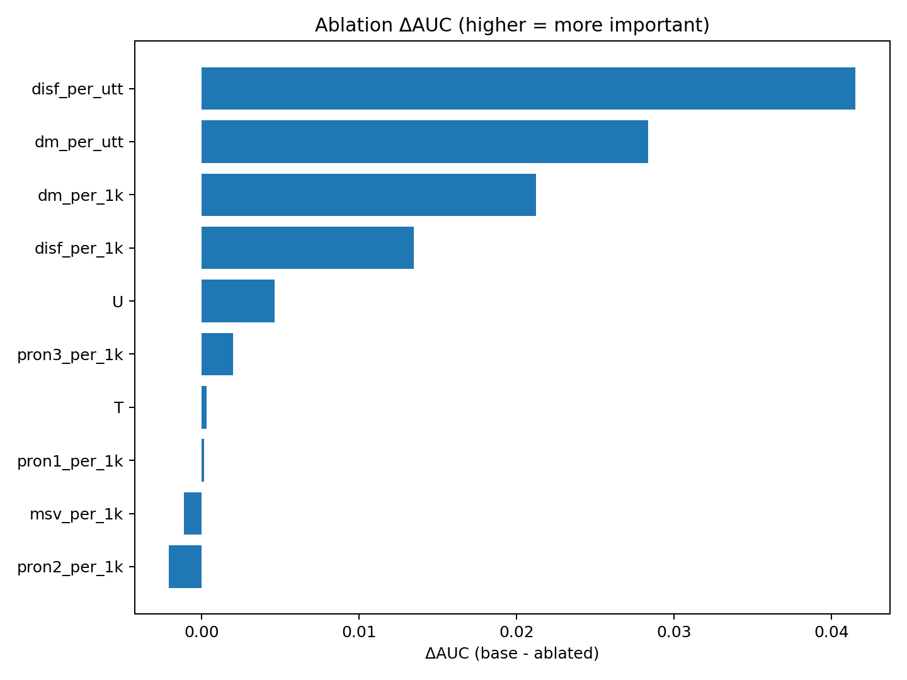
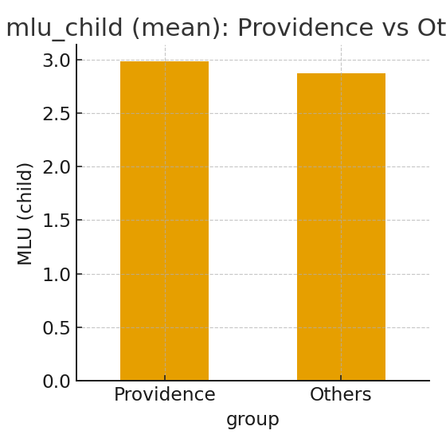
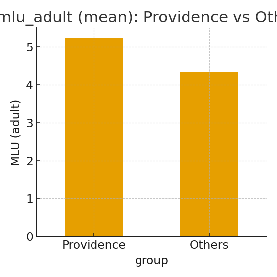
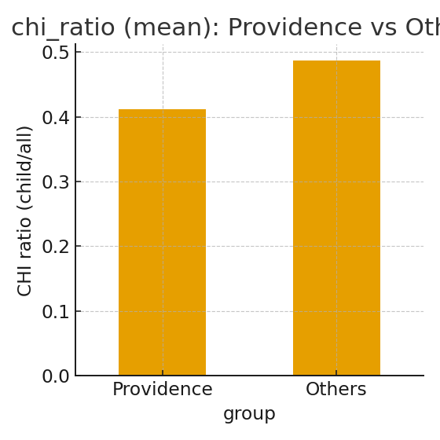

ASD vs TD — 語用論MVPまとめ（docs版）
LoCO (paired, calibrated) — 平均指標
| 設定 | AUC_adj (mean) | F1_cal (mean) |
|---|
| + Reference + Meta | 0.801 | 0.414 |
| + Reference | 0.639 | 0.336 |
| Base | 0.633 | 0.281 |
注: 各foldの単純平均。閾値は学習側CVでF1最大を採用。
このHTMLは docs/ 内の CSV と PNG を直接読み込んで再生成しています。
データ & QC
採用セッション数
QC閾値（参考）
- ASD: n_total [209–1312], chi_ratio [0.255–0.455]
- TD: n_total [318–1582], chi_ratio [0.319–0.671]
中央値（QC後）
| ASD | TD |
|---|
| CHI比 | 0.345 | 0.453 |
| MLU (Child) | 2.279 | 3.053 |
| MLU (Adult) | 3.825 | 4.765 |
比較図（docs/ の fig_box_*.png を自動埋め込み）
語用論MVP — 上位3指標（|Cohen's d|順）
| metric | ASD_mean | TD_mean | ASD_median | TD_median | Cohen d | Cliff δ | ASD_n | TD_n |
|---|
| disf_per_utt | 0.122 | 0.183 | 0.093 | 0.154 | -0.456 | -0.243 | 71 | 386 |
| disf_per_1k | 104.984 | 67.256 | 41.260 | 50.200 | 0.427 | -0.028 | 71 | 386 |
| dm_per_utt | 0.018 | 0.028 | 0.010 | 0.022 | -0.393 | -0.298 | 71 | 386 |
Feature Ablation (5-fold CV, thr=0.55)
Base: AUC=0.909, F1=0.575
| feature |
auc_drop |
f1_drop |
auc |
f1 |
| disf_per_utt |
0.041524 |
0.034034 |
0.867046 |
0.541043 |
| dm_per_utt |
0.028340 |
0.048104 |
0.880230 |
0.526972 |
| dm_per_1k |
0.021233 |
0.040845 |
0.887338 |
0.534231 |
| disf_per_1k |
0.013470 |
-0.013302 |
0.895100 |
0.588378 |
| U |
0.004658 |
0.003905 |
0.903913 |
0.571171 |
| pron3_per_1k |
0.001994 |
0.011413 |
0.906576 |
0.563663 |
| T |
0.000333 |
-0.025866 |
0.908238 |
0.600943 |
| pron1_per_1k |
0.000181 |
-0.017091 |
0.908390 |
0.592168 |
| msv_per_1k |
-0.001103 |
0.007282 |
0.909674 |
0.567795 |
| pron2_per_1k |
-0.002060 |
0.004892 |
0.910631 |
0.570185 |

LoCO (paired, calibrated) — Comparison
概況: Rollins/Sachs を含むfoldで安定して高性能。Providenceを含むfoldは相対的に難度高。
+ Reference + Meta (MLU/CHI)
| fold |
AUC_adj |
F1_cal |
thr |
| Flusberg+Brown |
0.901 |
0.515 |
0.704 |
| Flusberg+Providence |
0.549 |
0.294 |
0.547 |
| Flusberg+Sachs |
0.914 |
0.483 |
0.767 |
| Nadig+Brown |
0.772 |
0.350 |
0.657 |
| Nadig+Providence |
0.779 |
0.205 |
0.562 |
| Nadig+Sachs |
0.798 |
0.455 |
0.770 |
| Rollins+Brown |
0.948 |
0.556 |
0.635 |
| Rollins+Providence |
0.592 |
0.128 |
0.553 |
| Rollins+Sachs |
0.952 |
0.737 |
0.644 |
+ Reference
| fold |
AUC_adj |
F1_cal |
thr |
| Flusberg+Brown |
0.633 |
0.419 |
0.602 |
| Flusberg+Providence |
0.538 |
0.276 |
0.558 |
| Flusberg+Sachs |
0.662 |
0.484 |
0.709 |
| Nadig+Brown |
0.526 |
0.323 |
0.659 |
| Nadig+Providence |
0.662 |
0.116 |
0.536 |
| Nadig+Sachs |
0.617 |
0.556 |
0.694 |
| Rollins+Brown |
0.921 |
0.262 |
0.568 |
| Rollins+Providence |
0.571 |
0.088 |
0.593 |
| Rollins+Sachs |
0.624 |
0.500 |
0.652 |
Base
| fold |
AUC_adj |
F1_cal |
thr |
| Flusberg+Brown |
0.558 |
0.315 |
0.595 |
| Flusberg+Providence |
0.702 |
0.381 |
0.699 |
| Flusberg+Sachs |
0.573 |
0.222 |
0.649 |
| Nadig+Brown |
0.568 |
0.218 |
0.633 |
| Nadig+Providence |
0.571 |
0.119 |
0.530 |
| Nadig+Sachs |
0.629 |
0.541 |
0.652 |
| Rollins+Brown |
0.781 |
0.155 |
0.547 |
| Rollins+Providence |
0.596 |
0.091 |
0.506 |
| Rollins+Sachs |
0.721 |
0.483 |
0.656 |
Reviewer addendum — 指標マップ & Providence 診断
先生レビュー対応の補足資料（1枚）：TECH_MEMO_PrAAG.html
図は Providence vs Others の平均比較（MLU/CHI）。詳細はメモ内。



Limitations / 注意点
- コーパス間の分布差（話題・収録条件）により、foldごとの難易度差が残存（特に Providence 関連）。
- 決定閾値は学習側CVで最適化（F1最大）。実運用では校正データ/等費用比での再設定が必要。
- 参照表現はルール近似（固有名詞=先頭大文字語）。固有表記/語尾変化の検出強化で精度改善の余地あり。